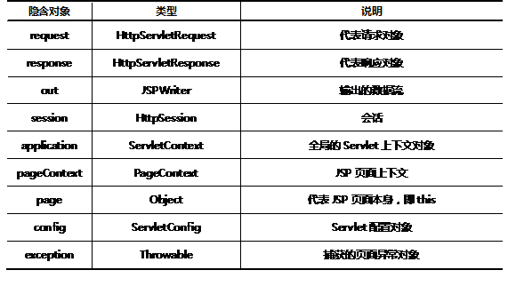

Servlet技术产生以后，在使用过程中存在一个很大的问题，即为了表现页面的效果而需要输出大量的HTML标签，这些标签在Servlet中表现为一个个的字符串常量。这种输出页面的方式不仅仅增加了开发时对页面的控制难度，也不利于后期的维护。为了能够将Servlet中用于表现的功能分离出来，提高视图的开发效率，推出了JSP这种技术，主要用于将Servlet中负责显示的语句抽取出来。
JSP（Java Server Page）是Sun公司制定的一种服务器端动态页面技术的组件规范，以“.jsp”为后缀的文件中既包含HTML静态标记用于表现页面，也包含特殊的代码，用于生成动态内容。
JSP作为简化Servlet开发的一种技术，实质上最终依然要转变为Servlet才可能运行，只不过这个转变过程由Servlet容器来完成。所以遵循JSP的编写规范才能使得JSP转变为需要的Servlet。
步骤一、创建一个以“jsp”为后缀的文件
步骤二、在文件中添加用于控制页面显示的HTML代码、样式及JavaScript脚本。
步骤三、在需要动态生成的部分添加Java代码的编程逻辑
JSP页面中的HTML代码与静态的HTML页面代码没有区别，可以有基本标记，可以有用于控制样式的CSS，可以有控制页面的JS脚本。这些原本在Servlet中表现为字符串常量的内容最终依然会在JSP转换成Servlet时由系统使用out.write方法自动输出。
在JSP页面中可以添加如下两种类型的注释
- <!-- 注释内容 -->
- <%-- 注释内容 -->
第一种注释也叫HTML注释，可以出现在JSP页面之中，注释内容中可以包含了一些Java代码，但这些代码会被执行
第二行注释是JSP注释，不允许注释的内容出现Java代码，写了Java代码也会被忽略，不会执行。
JSP页面之中可以嵌入一些Java代码，以此动态生成页面中的一些内容。而JSP规范恰恰是针对这些嵌入的Java代码的一些约束，各种不同类型的代码的作用以及在转变为Servlet一部分时的规则都是不一样的。JSP页面中可以包含如下三种类型的Java代码：
这些Java代码可以在页面的任何位置进行编写，当他们被执行时就可以控制页面上产生可变化的内容了。
使用表达式可以方便的在JSP页面中输出运算的结果，代码形式如下所示：
- <%=3+5%>
- <%=add()%>
- <%=xx.getName()%>
- <%=xx.getName()+“abc”%>
注意：表达式结束不需要写分号。
这种形式的Java代码在转译成Servlet时，会成为service（）方法中使用out.print语句的输出。
- out.print(3+5);
- out.print(add());
- out.print(xx.getName());
- out.print(xx.getName()+“abc”));
JSP小脚本可以编写Java代码段，从而实现相对较长的一段运算逻辑。这些Java代码最终都会成为Servlet中Service方法的一部分。由于HTML与Java可以进行混合使用，所以需要注意括号的匹配。
- <table>
- <%
- List<User> allUser = (List<User>)request.getAttribute(“users“);
- for(User u : allUser){
- %>
- <tr>
- <td> <%=u.getId()%> </td>
- <td> <%=u.getName()%> </td>
- </tr>
- <%
- }
- %>
- </table>
以上代码使用小脚本控制生成一个表格。<tr>行标记作为要循环输出的一部分出现在了循环体内。需要注意循环体结束时的大括号的匹配。这些代码最终都会成为service方法的一部分，转换结果如下：
- public void service(…){
- out.write(“<table>”);
- List<User> allUser = (List<User>)request.getAttribute(“users“);
- for(User u : allUser){
- out.write(“<tr> <td>”);
- out.print(u.getId());
- out.write(“</td><td>”);
- out.print(u.getName());
- out.write(“</td></tr>”);
- }
- out.write(“</table>”);
- }
JSP声明可以为对应的Servlet添加属性和方法。这种形式的代码使用的很少。语法规则如下：
- <%!
- //属性或方法的声明
- %>
如编写下列代码
- <%!
- public void fun(){
- //… 方法体
- }
- %>
转换为Servlet之后的结果如下：
- public class XXX_JSP extends JSPBase{
- public void fun(){
- // … 方法体
- }
- public void service(… …){
- }
- }
指令在JSP页面中通常起到转译成Servlet时的格式控制的作用。基本语法为：
- <%@ 指令名 属性=值 %>
常用指令包含以下三种
这些指令都有自己的属性来实现不同的控制功能。taglib指令会在讲解JSP标签时详细介绍。
page指令可以实现在JSP页面中导入要用到的Java包，也可以对页面的一些属性进行设置。
导包
- <%-- 导包 --%>
- <%@ page import=“java.util.*“%>
- <%@ page import=“java.util.*,java.sql.*“%>
使用page指令导包时，需要用到import属性。如果需要导入多个包，可以分成多条page指令来编写，也可以在一条page指令中，使用“，“逗号作为分隔来实现。注意，page指令要放在页面的最上面编写
设置response.setContentType（）方法的参数值
- <%-- 设置response.setConentType方法的参数值 --%>
- <%@ page contentType=“text/html;charset=utf-8“%>
使用page指令可以设置输出内容的编码方式，这样就可以设置浏览器使用正确的解码方式来显示页面。
设置容器读取该文件时的解码方法
- <%-- 设置容器读取该文件时的解码方式 --%>
- <%@ page pageEncoding=“UTF-8“%>
为了保证页面中编写的中文能够保存，以及容器在加载文件时能正确的解码文件中的中文，需要通过page指令的pageEncoding属性来完成。这段代码可以保证页面在加载到内存时正确的解码中文。
include指令主要用于将其他页面包含在另一个页面之中。同一个应用中的很多页面都会有相同的导航头、版权声明，在每一个页面中重复编写是没有必要的，而且如果导航头发生变化时不利于所有页面的更新。如果将这样共用的部分单独做到一个文件中，只需要在不同的页面中添加引用，就可以实现页面内容的重用。
include指令的语法如下：
- <%@ include file=“header.html” %>
由于JSP页面最终要转化为一个Servlet，而作为即将转变为Servlet的一个前期版本，会有很多系统提供给页面能够直接使用的对象，这些对象的创建由系统完成，对象名也有系统命名，根据页面中要实现的功能直接使用即可。具体的隐含对象信息见 表-1。
在Servlet中需要自己创建获取的对象在JSP页面中使用表-1中的对象名即可，原有的方法通过对象来调用。
表 – 1 JSP页面总的隐含对象
JSP页面的运行流程遵循如 图 -1 所以的过程。整个过程在Servlet容器的控制下将请求的JSP资源转变为Servlet之后，同样会经历Servlet的例化、初始化、就绪、销毁四部分的生命周期。从图中可以看到，之所以第一次请求一个JSP页面会比之后的请求响应慢一些，就是要经过转译成Servlet，编译成class这样一个过程。
图 - 1
JSP页面最终是要转译为一个Servlet，所以JSP页面中的HTML代码及Java代码、指令等内容都会按照固定的方式变为Servlet中的一部分。
图 – 2
如 图- 2 所示，用于导包的page指令最终成为import语句，page指令中的contentType属性转变为了_JSPService()方法中的response.setContentType()方法，HTML标记都会有out.write方法输出，<%%>的小脚本原封不动成为了_JSPService()方法内的一部分。当HTMl标记与小脚本混合在一起时，转变过程遵循从上至下的顺序逐行转变。
在将一个静态HTML页面转变为动态的JSP页面时，首先需要分析页面的整体结构，找到页面中不变的公共部分，如导航、页脚等信息。将静态页面的脚本拷贝到JSP页面之后，一定要添加page指令pageEncoding属性，保证页面中的中文能够被正确编码。添加page指令的import属性导入页面中需要的Java包。将页面中与目标页面不一致的地方进行修改，如修改表头与实际字段一致。最后将页面中需要动态生成的内容删除，使用小脚本的Java代码来实现运算逻辑。